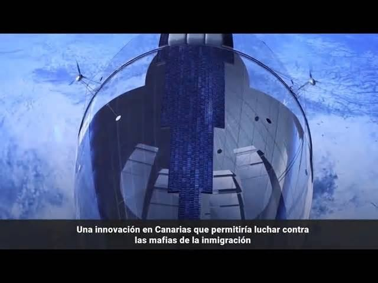

Una innovación en Canarias que permitiría luchar contra las mafias de la inmigración

El dron solar APUS NEO 18 supera 100 horas de vuelo en Fuerteventura, abriendo nuevas opciones para vigilancia marítima y prevención de incendios.
El dron solar APUS NEO 18 supera 100 horas de vuelo en Fuerteventura, abriendo nuevas opciones para vigilancia marítima y prevención de incendios.
Noticia publicada por Lancelot Digital. Consulta el artículo original en Lancelot Digital para más información.